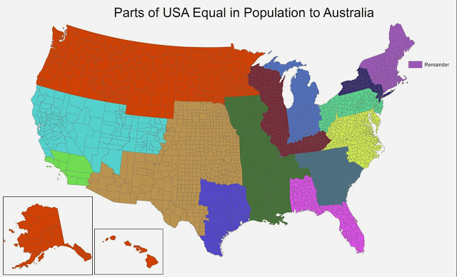
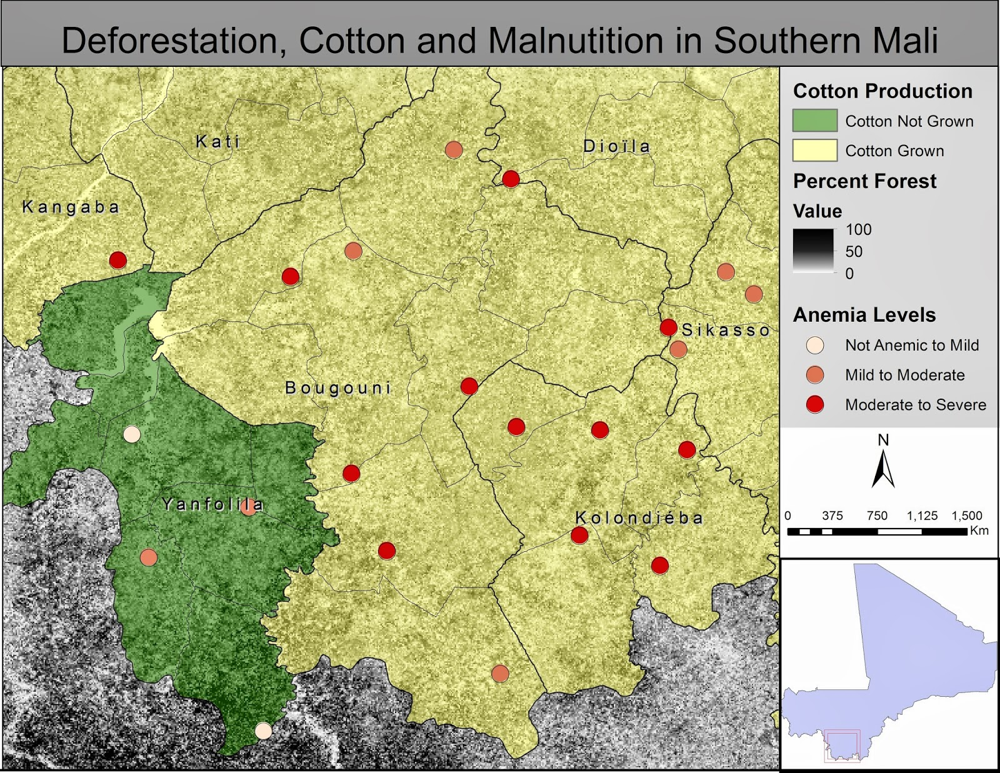
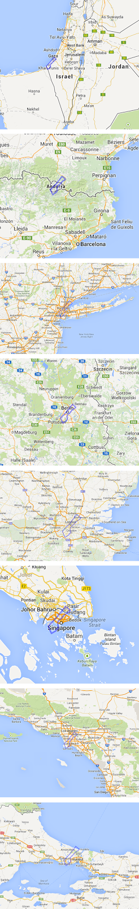

Gallery of Old Maps
Here are a bunch of old maps that I put on reddit, to try and earn as many fake internet points as possible. I think they're all a few years old, from when I was a baby at coding, and mostly just knew GIS/cartography. Here for posterity.

A pretty interesting map. The title says it all.

I just wanted to show my Aussie friends how many people live in America!

I used this map to win a grant to do my MA research in Mali. Anyone looking at this map should be cautioned that the author is trying to subliminally suggest that Yanfolila is more forested, and should read the book "How to Lie with Maps" so that they will no longer be susceptible to such tricks.

I saw some data that needed a map, so I mapped it. I don't really remember why, though.

Trying to emphasize how tiny Gaza is, and how trapped the people there must feel.